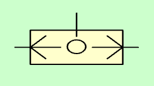
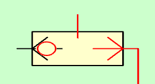
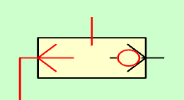
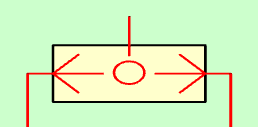
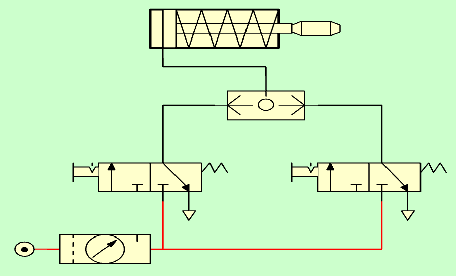
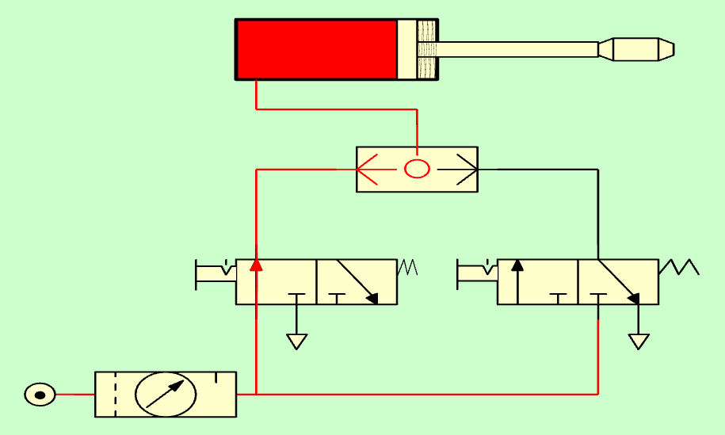
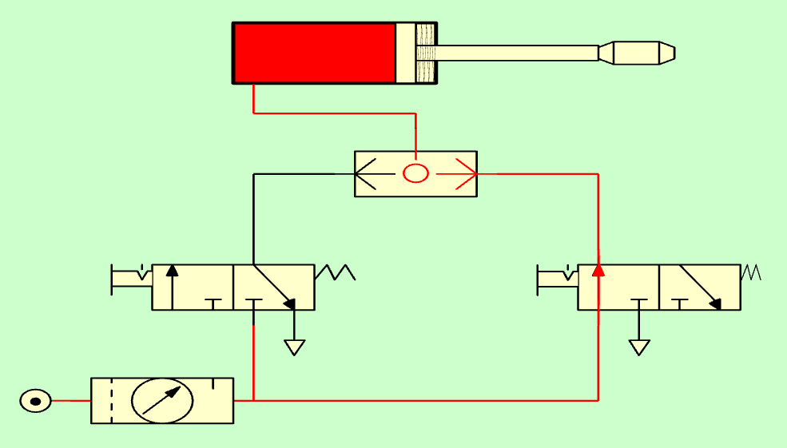
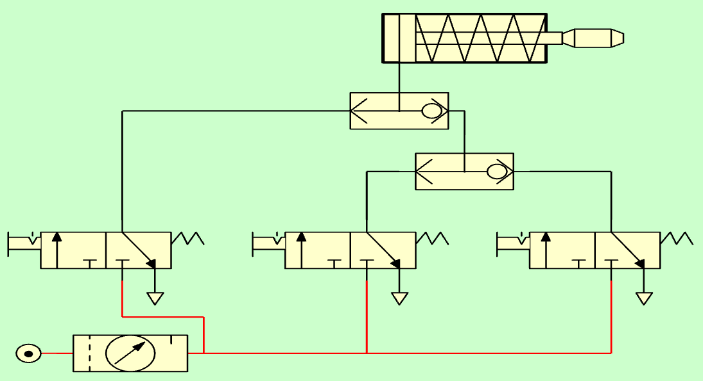

5. La vàlvula del selector o o de la vàlvula¶
La vàlvula de selecció ** ** o ** o ** permet que l’aire de pressió circuli des de qualsevol de les carreteres del camí superior. Aquesta vàlvula no permet que el pas de l’aire pressió es pretengui des de la pista dreta fins a la pista esquerra o viceversa.
L’operació de resum es pot explicar dient que la vàlvula deixa que l’aire passi a pressió quan l’aire arribi a la pressió sobre la ruta esquerra ** o ** pel camí dret, d’aquí el seu nom.
El símbol de repòs del selector o de la vàlvula de la vàlvula és el següent:

Vàlvula o vàlvula de selecció o.¶
Quan s’injecta l’aire a la via dreta a la dreta, la bola central es desplaçarà a l’esquerra, permetent el pas de l’aire a la pista superior i impedeix que l’aire s’escapi a la ruta esquerra.

Vàlvula de selecció amb pressió sobre el camí correcte.¶
L’operació és similar quan s’injecta amb pressió a la pista esquerra, deixant que la pressió passi pel camí superior i no permeti que l’aire passi el camí dret.

Vàlvula del selector amb pressió a la pista esquerra.¶
Quan s’injecta l’aire a pressió amb la pista dreta i esquerra, l’aire de pressió surt per la ruta superior.

Vàlvula del selector amb pressió a les dues rutes d’entrada.¶
Nota
La vàlvula del selector és diferent d’una simple unió de tubs perquè impedeix que l’aire de la pressió s’escapi per la ruta que no té pressió.
El funcionament de la vàlvula del selector o de la vàlvula o es pot resumir a la taula de veritat següent o a la taula lògica:
| Ruta esquerra | Ruta dreta | Camí superior |
|---|---|---|
| Sense pressió (0) | Sense pressió (0) | Sense pressió (0) |
| Amb pressió (1) | Sense pressió (0) | Amb pressió (1) |
| Sense pressió (0) | Amb pressió (1) | Amb pressió (1) |
| Amb pressió (1) | Amb pressió (1) | Amb pressió (1) |
Efecte senzill i cilindre de la vàlvula de selecció¶
En aquest circuit, un cilindre d'efecte simple s'activa per dues vàlvules 3/2 indistintament. És a dir, quan actuarà qualsevol de les dues vàlvules, sortirà la vareta del cilindre.
{kind=link}

Cilindre d'efecte senzill amb vàlvula de selecció.¶
A les figures següents podeu veure el cilindre activat des de la vàlvula esquerra i des de la vàlvula dreta.
{kind=link}

Cilindre d'efecte senzill amb vàlvula de selecció amb pressió per l'esquerra.¶
{kind=link}

Cilindre d'efecte senzill amb vàlvula de selecció amb pressió a la dreta.¶
És interessant verificar com no es perd l’aire de pressió a través de l’escapament de les vàlvules de repòs, perquè la vàlvula del selector impedeix que l’aire de la pressió surti per la ruta que no té pressió.
En el cas d’operar les dues vàlvules, la vareta del cilindre també s’apagarà.
Funcionament d'una unió de tubs¶
El funcionament d’un tubs pneumàtics és una mica similar al d’una vàlvula seleccionista, amb la diferència que la pressió d’un camí es pot escapar d’una altra manera si no té pressió.
{kind=link}
Al circuit anterior, l’aire de pressió que prové de la vàlvula esquerra arriba al cilindre i fa que la seva descendència s’apagui, però la pressió també es perd per la vàlvula dreta que està connectada a l’escapament.
El resultat final és que l’aire de pressió sortirà tot el temps a causa de la fugida de la vàlvula de descans, fent molt de soroll i reduint la pressió del tub i la força amb què surt el cilindre d’efecte senzill.
Unió de vàlvules de selecció¶
Les vàlvules de selecció pneumàtica poden estar disponibles a la cascada per unir -se a més de dues vàlvules de control pneumàtic en una única ruta de sortida d'aire.
El funcionament de les vàlvules en cascada és similar al d’una sola vàlvula. Si alguna de les pistes laterals rep aire a pressió, aquest aire de pressió es dirigeix cap al camí superior.
{kind=link}

Unió de vàlvules de selecció de Cascade.¶
Exercicis¶
Dibuixa el símbol de repòs d’una vàlvula de selecció pneumàtica.
Dibuixa el funcionament d’una vàlvula de selecció pneumàtica quan rep pressió al camí correcte.
Dibuixa el funcionament d’una vàlvula de selecció pneumàtica en rebre aire a la pista esquerra.
Expliqueu el funcionament de la vàlvula del selector i dibuixeu la vostra taula de veritat.
Simula el funcionament d’un cilindre d’efecte senzill amb una vareta que ha d’anar quan actuen qualsevol de les dues vàlvules 3/2 ** maniobra.
Dibuixa el circuit de paper anterior i explica el seu funcionament.
Simula el funcionament d’una unió de tubs pneumàtics al simulador. <../_ static/flash/simulator-neumatica.html>`__
Dibuixa el circuit de paper anterior i explica el seu funcionament.
Quines diferències hi ha entre una vàlvula de selecció pneumàtica i una unió de tubs pneumàtics?
Què serveix de les vàlvules del selector pneumàtic a la cascada?
Simula un circuit que té tres vàlvules 3/2 que comparteixen un cilindre d’efecte senzill. La tija del cilindre ha de sortir quan qualsevol de les tres vàlvules individuals sigui acció.